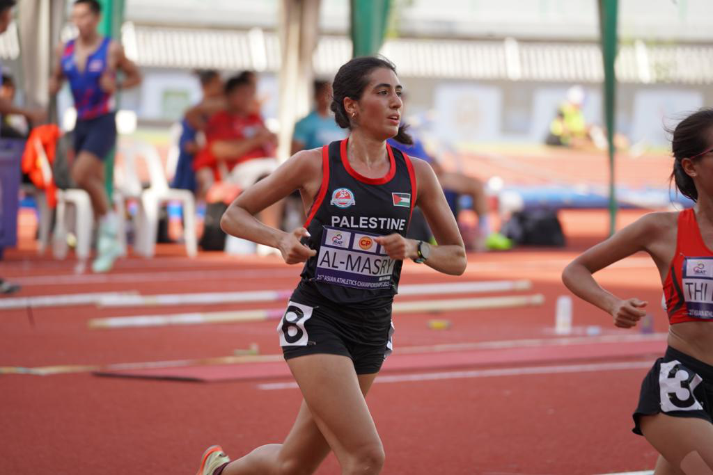

Layla Almasri
Country: Palestine
School: University of Colorado, Colorado Springs
DOB: June 26, 1999
Personal Bests:
1500m - 4:23.01 (National Record)
1 Mile - 4:41.66 (National Record)
3000m - 9:38.11 (Indoor)
5000m - 16:28.36
Multiple-time NCAA II all-American in cross country and track. Recent bronze medalist in the 1500m at the Arab Athletic Championships. Currently preparing for the Asian Games in Thailand.
